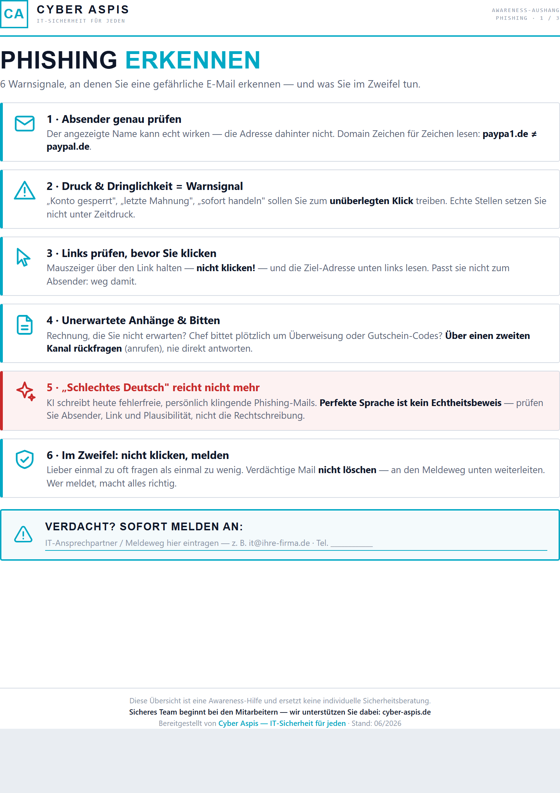
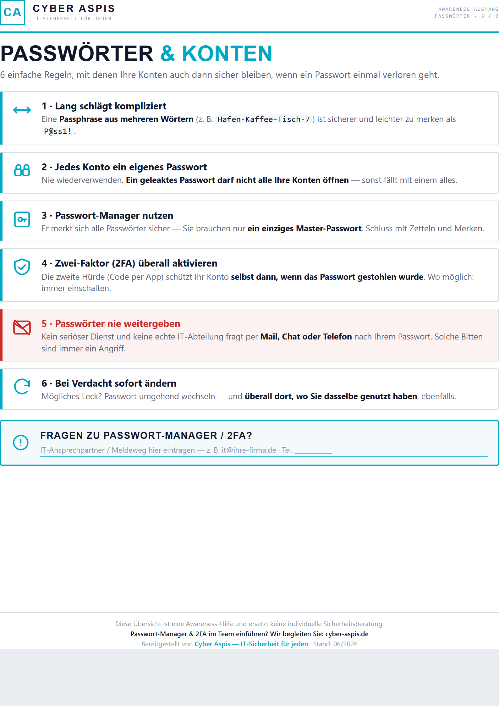
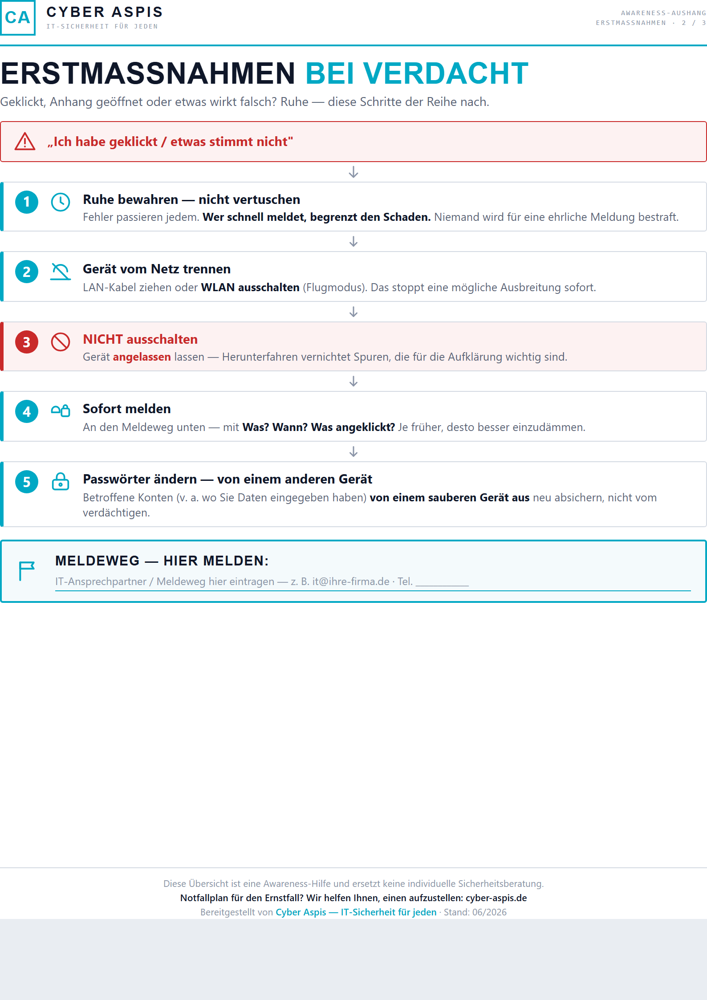

Drei Aushänge für den Arbeitsalltag, ein Beispiel-Report und eine Checkliste zum Selbstaudit. Alles zum direkten Download, ohne Formular und ohne E-Mail-Adresse. Gedacht für Betriebe ohne eigene IT-Abteilung.

Die häufigsten Merkmale von Phishing-Mails auf einen Blick, für Pausenraum oder Empfang. Für Betriebe, die ihre Mitarbeitenden ohne Schulungsaufwand für die häufigste Angriffsform sensibilisieren wollen.
PDF herunterladen ↓
Kurzanleitung für sichere Passwörter und den Umgang mit Passwort-Managern. Geeignet als Aushang oder als Beilage zum Onboarding neuer Mitarbeitender.
PDF herunterladen ↓
Die ersten Schritte nach einem vermuteten Sicherheitsvorfall: wen informieren, was sofort zu tun ist, was zu unterlassen ist. Für den Notfall-Ordner oder direkt neben das Telefon.
PDF herunterladen ↓Ein vollständiger Muster-Report, wie er nach einem Security Quick-Check aussieht. Zeigt Aufbau, Befund-Priorisierung und Handlungsempfehlungen, bevor Sie sich für einen echten Check entscheiden. Musterreport, frei erfundenes Szenario.
Bericht ansehen →Eine Checkliste für Entwickler- und IT-Teams zur Prüfung der eigenen Build- und Deploy-Kette auf Supply-Chain-Risiken. Setzt technischen Zugriff auf Repository und Pipeline voraus, kein Geschäftsführer-Material.
Checkliste ansehen →Diese Materialien ersetzen keinen echten Blick auf Ihre Systeme. Der Security Quick-Check ist in 2–4 Stunden erledigt und liefert einen vollständigen Befund für Ihr Unternehmen, inklusive Report und Review-Gespräch.